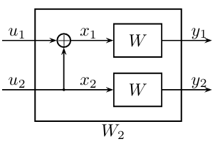
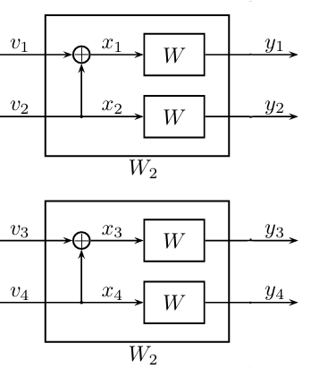
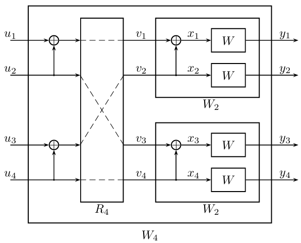
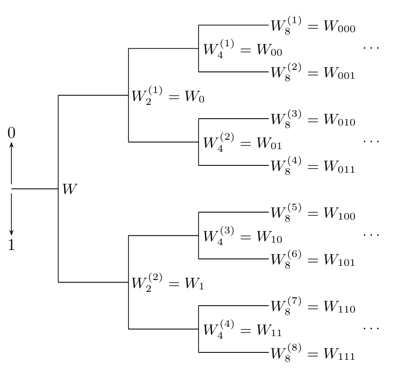
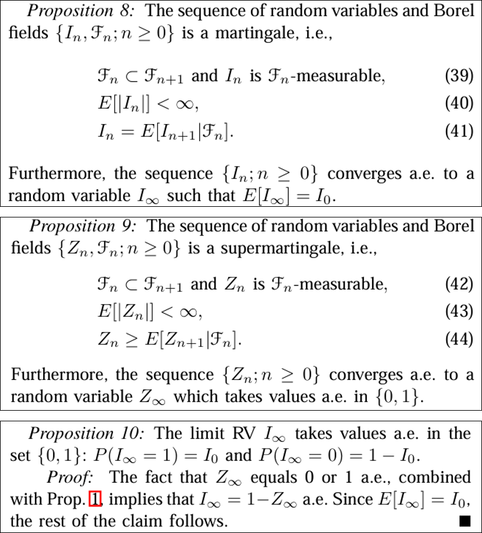

二、信道极化现象#
1. 极化信道及其容量#
1.1 一层极化#
回顾上一节，我们引入了一类被称为“极化信道”的特殊信道：\(W_N^{(i)}\)。它以第\(i\)个随机变量\(U_i\)为输入，以前\(i-1\)个随机变量\(U_{1:i-1}\)和随机变量\(Y_{1:N}\)为输出，在码长为\(N\)时，共有\(N\)个这样的信道。首先我们考虑码长为\(2\)的情况：

上图中有两个极化信道：
\(W_2^{(1)}\)，以\(U_1\)为输入，以\(Y_1,Y_2\)为输出；
\(W_2^{(2)}\)，以\(U_2\)为输入，以\(Y_1,Y_2,U_1\)为输出。
极化信道的定义是十分抽象的，请接受它。
由于这个场景比较简单，我们可以直接写出两个极化信道的转移概率矩阵。设简单信道\(W\)为一比特翻转信道，翻转概率为\(p\)。那么第一个极化信道的转移概率矩阵为：
\(W_2^{(1)}\) |
\((y_1,y_2)=(0,0)\) |
\((y_1,y_2)=(0,1)\) |
\((y_1,y_2)=(1,0)\) |
\((y_1,y_2)=(1,1)\) |
|---|---|---|---|---|
\(u_1=0\) |
\(\frac{1}{2}(1-p)^2+\frac{1}{2}p^2\) |
\(p\cdot(1-p)\) |
\(p\cdot(1-p)\) |
\(\frac{1}{2}(1-p)^2+\frac{1}{2}p^2\) |
\(u_1=1\) |
\(p\cdot(1-p)\) |
\(\frac{1}{2}(1-p)^2+\frac{1}{2}p^2\) |
\(\frac{1}{2}(1-p)^2+\frac{1}{2}p^2\) |
\(p\cdot(1-p)\) |
当\(p=0.1\)时，代入计算其信道容量可得\(I(W_2^{(1)}) = 0.3199\)。
第二个极化信道的转移概率矩阵为：
\(W_2^{(2)}\) |
\((y_1,y_2,u_1)=(0,0,0)\) |
\((y_1,y_2,u_1)=(0,0,1)\) |
\((y_1,y_2,u_1)=(1,0,0)\) |
\((y_1,y_2,u_1)=(1,0,1)\) |
\((y_1,y_2,u_1)=(0,1,0)\) |
\((y_1,y_2,u_1)=(0,1,1)\) |
\((y_1,y_2,u_1)=(1,1,0)\) |
\((y_1,y_2,u_1)=(1,1,1)\) |
|---|---|---|---|---|---|---|---|---|
\(u_2=0\) |
\(p_1\) |
\(p_2\) |
\(p_2\) |
\(p_1\) |
\(p_2\) |
\(p_3\) |
\(p_3\) |
\(p_2\) |
\(u_2=1\) |
\(p_2\) |
\(p_2\) |
\(p_2\) |
\(p_2\) |
\(p_2\) |
\(p_1\) |
\(p_1\) |
\(p_2\) |
其中\(p_1=\frac{1}{2}(1-p)^2,p_2=\frac{1}{2}p(1-p),p_3=\frac{1}{2}p^2\)。当\(p=0.1\)时，代入计算其信道容量可得\(I(W_2^{(2)}) = 0.7421\)。注意到，原简单信道的信道容量为\(I(W)=0.5310\)，不难验证两个极化信道的容量均值与极化前相等。这实际上是互信息的链式法则的体现：
1.2 两层极化#
当码长增加到\(N=4\)时，我们首先对四个简单信道\(W\)两两进行了一层极化变换，从而得到四个“一阶”极化信道：

这四个“一阶”极化信道的输入输出分别为：
输入\(V_1\)，输出\(Y_1,Y_2\)；
输入\(V_2\)，输出\(Y_1,Y_2,V_1\)；
输入\(V_3\)，输出\(Y_3,Y_4\)；
输入\(V_4\)，输出\(Y_3,Y_4,V_3\)。
注意到，分别以\(v_1\)和\(v_3\)为输入的两个极化信道，它们同属于第一种“一阶”极化信道，而分别以\(v_2\)和\(v_4\)为输入的两个极化信道，它们同属于第二种“一阶”极化信道。基于这一相同点我们将它们分为两组，然后组内再进行一层极化变换，得到四个极化信道：

这四个极化信道分别为：
\(W_4^{(1)}\)，输入\(V_1\)，输出\(Y_{1:4}\)；
\(W_4^{(2)}\)，输入\(V_2\)，输出\(Y_{1:4},V_1\)；
\(W_4^{(3)}\)，输入\(V_3\)，输出\(Y_{1:4},V_{1:2}\)；
\(W_4^{(4)}\)，输入\(V_4\)，输出\(Y_{1:4},V_{1:3}\)；
这个过程可以推广到\(N=2^n\)的情况，根据互信息的链式法则，它们的容量之和在每一层极化中都保持不变，最终也不变：
1.3 信道极化定理#
对所有的二进制输入离散无记忆对称信道\(W\)而言，极化信道\(W^{(i)}_N\)按照如下规则发生极化：任意给定\(\delta\in(0,1)\)，当\(N\)按照\(2\)的整数次幂趋于无穷时，满足\(I(W_N^{(i)})\in(1-\delta,1]\)的索引\(i\)的占比趋近于\(I(W)\)，满足\(I(W_N^{(i)})\in[0,\delta)\)的索引\(i\)的占比趋近于\(1-I(W)\)。
这个定理可以粗略理解为，链式法则等式中，那些特殊形式的互信息要么是0要么是1，而位于0和1之间的项虽然也存在，但随着码长趋于无穷而占比趋于0。
2. 数学预备知识#
2.1 极化二叉树#
根据之前的叙述我们可以发现，在每一层极化变换后，极化信道的种类数都将翻倍，同一类的极化信道具有相同的结构和容量。因此，对码长为\(N=2^n\)进行\(n\)次极化构造的过程可以表示一个二叉树：

这个树上的每个节点\(W_N^{(i)}\)，在下一层都会分裂为两个新节点\(W_{2N}^{(2i-1)}\)和\(W_{2N}^{(2i)}\)，并且有：
\(I(W_{2N}^{(2i-1)})+I(W_{2N}^{(2i)})=2\cdot I(W_N^{(i)})\)
接下来我们考虑一个类似高尔顿板的结构，从根节点出发，在每个节点上随机选择一个子节点继续前进，一直进行下去。容易知道，在第\(n\)步中，当前节点对应的极化信道容量是一个随机变量，这个不断前进的过程是一个随机过程。
高尔顿板，将小球从顶层小口投入，每个拐点均匀随机选一个方向下落，最终形成高斯分布包络线。
2.2 鞅论基础#
极化二叉树所描述的随机过程，有一个关键的性质：在已知第\(n\)步的取值为\(I(W_N^{(i)})\)的条件下，第\(n+1\)步取值的条件期望就是\(I(W_N^{(i)})\)。在随机过程理论中，存在一类描述该行为的数学对象：鞅（Martingale）。
鞅：设\(\{X_n,n\geq 0\}\)和\(\{Y_n,n\geq 0\}\)是随机过程，对任意的\(n\geq 0\)，\(X_n\)是\(Y_0,\ldots,Y_n\)的函数，\(E|X_n|<\infty\)，且：
则称\(\{X_n\}\)是关于\(\{Y_n\}\)的鞅。
“随机过程在某一步的条件期望”与“随机过程在某一步的数学期望”是两个不同的概念，条件期望是关于条件部分的函数，而数学期望等于条件期望关于条件部分的均值。
\(\sigma\)代数：设\(\Omega\)是一个样本空间（或任意一个非空集合），\(\mathcal{F}\)是\(\Omega\)的某些子集组成的集合族，且满足如下特殊性质：
\(\Omega\in\mathcal{F}\)；
若\(A\in\mathcal{F}\)，则\(A^c\in\mathcal{F}\)；
若\(A_n\in\mathcal{F},n=1,2,\ldots\)，则\(\bigcup_n A_n\in\mathcal{F}\)。
则称\(\mathcal{F}\)为\(\Omega\)上的一个\(\sigma\)代数，而\((\Omega,\mathcal{F})\)称为可测空间，\(\mathcal{F}\)中的元素称为随机事件。
\(\sigma\)代数流与适应列：设\((\Omega,\mathcal{F},P)\)是完备的概率空间，\(\{\mathcal{F}_n,n=0,1,\ldots\}\)是\(\mathcal{F}\)内的一系列满足\(\mathcal{F}_n\subset\mathcal{F}_{n+1}\)的子\(\sigma\)代数，则称之为\(\sigma\)代数流。如果\(\forall n\geq 0\)，\(X_n\)是\(\mathcal{F}_n\)可测的，则称随机过程\(\{X_n\}\)为\(\{\mathcal{F}_n\}\)适应的。
鞅的另一个定义：设\(\{\mathcal{F}_n,n\geq 0\}\)是一个\(\mathcal{F}\)中的\(\sigma\)代数流，如果随机过程\(\{X_n,n\geq 0\}\)是\(\{\mathcal{F}_n\}\)适应的，并且有：
则称\(\{X_n\}\)是关于\(\{\mathcal{F}_n\}\)的鞅。
鞅收敛定理：设\(\{X_n\}\)是关于\(\{\mathcal{F}_n\}\)的鞅，并且存在常数\(C\)使得\(E|X_n|\leq C\)总成立，则当\(n\to \infty\)时，\(\{X_n\}\)几乎必然（almost surely, a.s.）收敛到一个随机变量\(X_\infty\)。
Borel \(\sigma\)代数：设\(\Omega=\mathbb{R}\)，有所有半无限区间\((-\infty,x]\)生成的\(\sigma\)代数，称为\(\mathbb{R}\)上的Borel \(\sigma\)代数，其中的元素称为Borel集合。
本小节只是对基本概念的简单列举，如果有兴趣深入研究，可参考北大应用随机过程讲义。
3. Arikan的证明#
3.1 Bhattacharyya参数#
记信道\(W\)输入\(x\)输出\(y\)的概率为\(W(y|x)\)，输入取值于集合\(\mathcal{X}\)，输出取值于集合\(\mathcal{Y}\)，则该信道的Bhattacharyya参数为：
该信道的对称容量为：
对任意的二进制输入离散无记忆对称信道而言，有如下两个关系成立：
3.2 证明过程#
Arikan的证明过程要点为：
基于对称容量构造一个鞅\(\{I_n\}\)，根据鞅收敛定理知道，当\(n\)趋于无穷时，它几乎处处收敛到一个随机变量\(I_\infty\)；
基于Bhattacharyya参数构造一个上鞅（Supermartingale）\(\{Z_n\}\)，根据鞅收敛定理知道，当\(n\)趋于无穷时，它几乎处处收敛到一个随机变量\(Z_\infty\)，且\(Z_\infty\)取值于集合\(\{0,1\}\)；
根据\(I(W)\)和\(Z(W)\)之间的关系，知道\(I_\infty\)也取值于集合\(\{0,1\}\)。
这一过程在原文中为：

之所以在这里额外引入了一个参数\(Z(W)\)，是因为在节点分裂\((W,W)\to(W',W'')\)的过程中，关于\(I(W),I(W'),I(W'')\)我们只能知道一个模糊的大小关系：
而关于\(Z(W),Z(W'),Z(W'')\)我们不仅有相似的大小关系：
还有一个明确的计算公式：
不过可惜的是，相比\(I(W)\)期望保持不变的优良特点，\(Z(W)\)在分裂后变小（从而只能构造出一个上鞅）：
解决方法是，根据\(I(W)\)和\(Z(W)\)之间的关系，使用\(I(W)\)证明收敛性，使用\(Z(W)\)证明收敛后的随机变量取值于\(\{0,1\}\)。